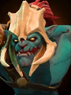
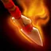

Berserker's Blood
Passive Ability
Huskar ignites his spear with boiling blood. Each normal attack will cause magical damage to himself, while also causing stackable continuous damage to enemy pieces.
Based on the percentage of Huskars missing health, he will gain attack speed, magic resistance, and percentage health regeneration bonuses.
| ★ | ★★ | ★★★ | |
|---|---|---|---|
| BURNING SPEAR DURATION | 5 | ||
| BURNING SPEAR DAMAGE PER SEC | 15 | 20 | 25 |
| HEALTH COST PER ATTACK | 15 | 20 | 25 |
| BONUS ATTACK SPEED PER 10% HEALTH LOST | 7 | 10 | 15 |
| BONUS MAGIC RESISTANCE PER 10% HEALTH LOST | 8 | ||
| BONUS HEALTH REGEN PER 10% HEALTH LOST | 0.4 | ||
| Cooldown (s) | 0.0 | 0.0 | 0.0 |
The Sacred Warrior ignites his weaponry after marking it with his blood - causing far greater pain than he feels.
Stats
| ★ | ★★ | ★★★ | |
|---|---|---|---|
| Health | 700 | 1400 | 2800 |
| Mana | 0 | 0 | 0 |
| Armor | 6 | 6 | 6 |
| Magic resistance | 25% | 25% | 25% |
| Attack damage | 70–100 | 140–200 | 280–400 |
| Attack interval (s) | 1.1 | 1.1 | 1.1 |
| Attack range | 400 | 400 | 400 |
| Move speed | 500 | 500 | 500 |
 Troll · Voodoo Frenzy
Troll · Voodoo Frenzy
- (2) All allies gain +20 attack speed.
- (4) All allies gain another +50 attack speed (+70 total).
- (6) All allies gain +20 attack speed for each attack they land, for the rest of the battle, up to +120.
 Warrior · Fortified Armor
Warrior · Fortified Armor
Below 50% HP, Warriors get double the armor from Fortified Armor.
- (3) Warriors get +3 armor, doubled to +6 below 50% HP.
- (6) Warriors get another +12 armor: +15 in total, or +30 below 50% HP.
- (9) All allies reflect pure damage equal to 1.5x their current armor every time they take physical or magical damage (3x below 50% HP).